Frequency Decomposition
构造共享低频支撑和模态特异高频支撑，分离稳定簇内部与候选异配差异。
MULTIMODAL GRAPH CLUSTERING · HETEROPHILY · SIMPLICIAL CLOSURES
用单纯形闭合为模态内与模态间的异配证据提供拓扑佐证
Topological Corroboration via Simplicial Closures for Heterophilic Multimodal Graph Clustering · AAAI 2027 Conference Submission
01 · MOTIVATION
多模态图聚类通常用高频通道捕捉异配差异，但单条边上的差异仍然结构欠定：它既可能是孤立噪声，也可能属于由局部闭合共同支撑的边界模式。TopoCor 用单纯形闭合补充这种缺失的高阶语境。
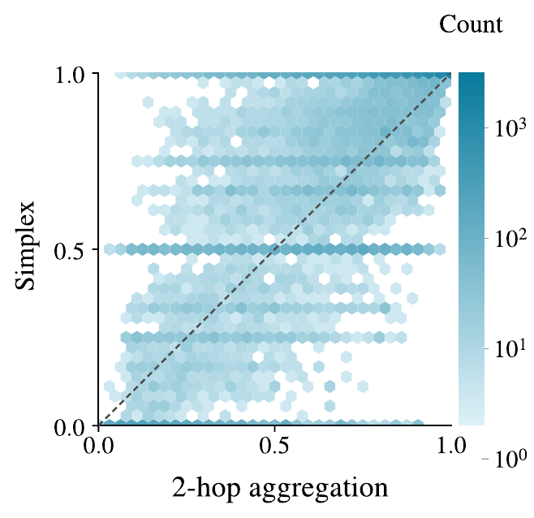
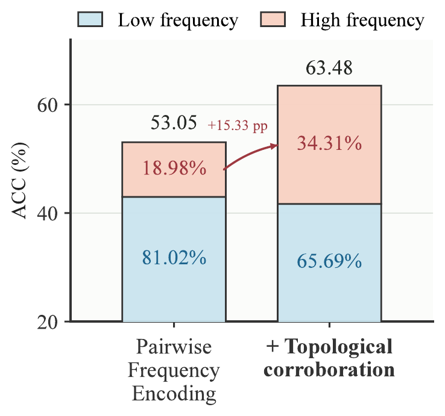
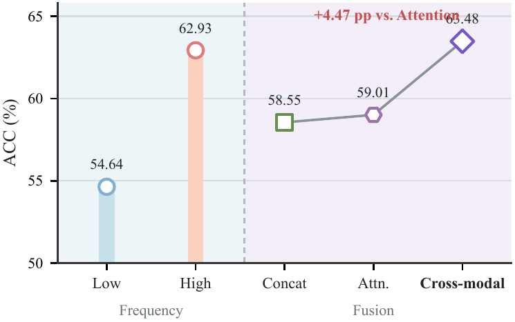
核心直觉：TopoCor 不把三角形当成边界真实性的证明，而是用闭合提供 interaction-order context，让成对高频差异从孤立事件变成可被结构化解释的证据。
02 · METHOD
TopoCor 保留共享低频簇内部作为稳定锚点，同时在各模态的高频支撑上构造 clique complex；随后分别建模边与三角形，并把新的闭合证据以残差方式注入成对表示。
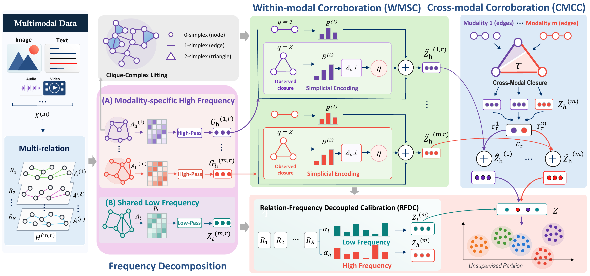
构造共享低频支撑和模态特异高频支撑，分离稳定簇内部与候选异配差异。
把高频支撑提升为 clique complex，以阶特定 Bernstein filters 分别编码边与三角形。
在低频和高频通道中独立学习关系权重，使关系贡献与频率角色相匹配。
提取仅由多模态边联合形成的闭合，并通过 provenance-aware routing 注入互补证据。
03 · MAIN RESULTS
实验覆盖多模态 IMDB、Amazon、Ele-Fashion，以及多关系 ACM、DBLP、Yelp；使用 ACC、NMI 和 ARI 评估聚类质量，并与多模态编码、图滤波和多关系融合方法比较。
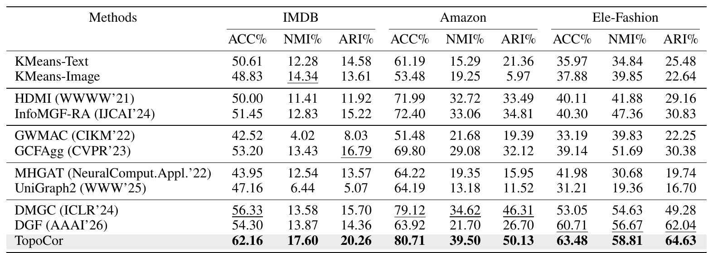
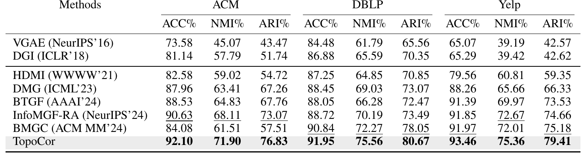
04 · ANALYSIS
论文与补充材料进一步检查不同输入结构下的模块分工、闭合证据的注入方式、学习到的表示几何，以及理论性质、闭合规模、受控基线和超参数稳定性。
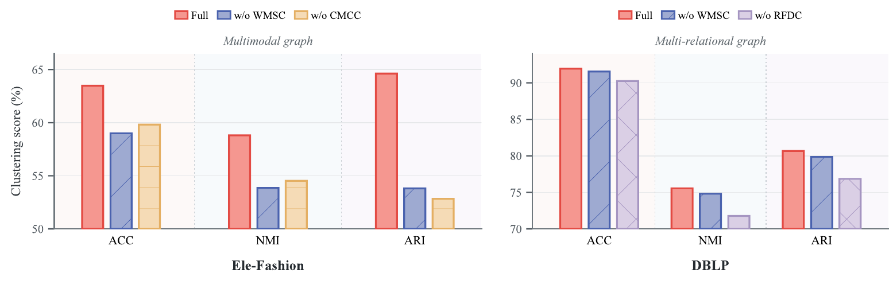
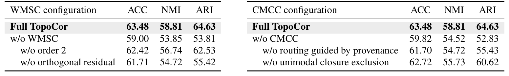
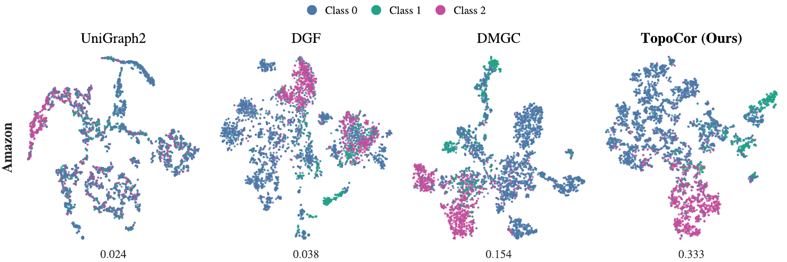
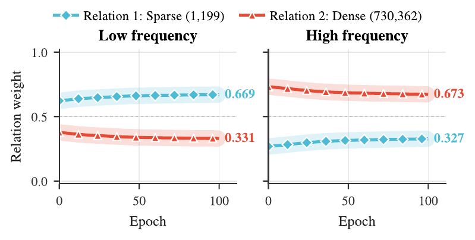
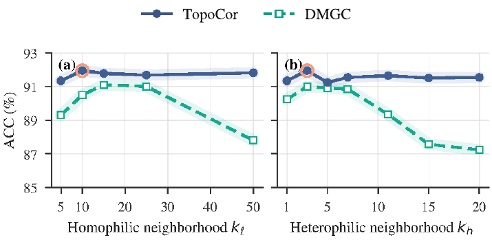
三角形共成员算子不能由边算子的标量多项式普遍复现，因此 order-2 通道不是更深的成对传播。
阶特定 Bernstein filter 在谱区间上保持单调、有界且非扩张，避免高阶信号被无约束放大。
理想正交残差精确保留成对高频锚点的对齐分量；数值稳定实现则把偏差控制在可计算的界内。
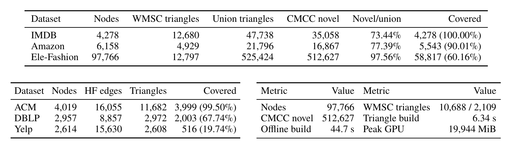
实际规模：CMCC 新发现的跨模态闭合占 union triangles 的 73.44%–97.56%，说明它并非重复单模态三角形；在 97,766 个节点的 Ele-Fashion 上，完整离线构造为 44.7 秒，峰值显存为 19,944 MiB。
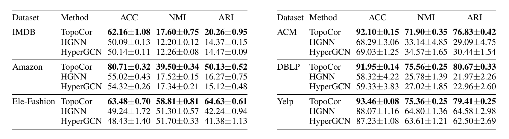
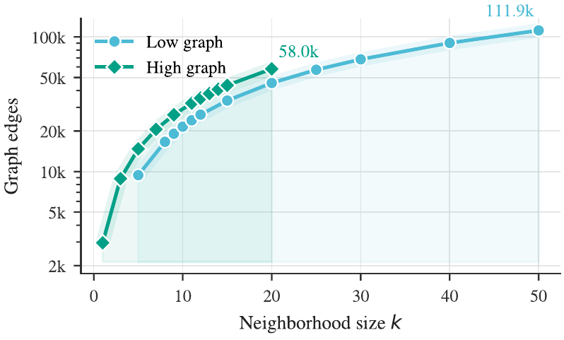
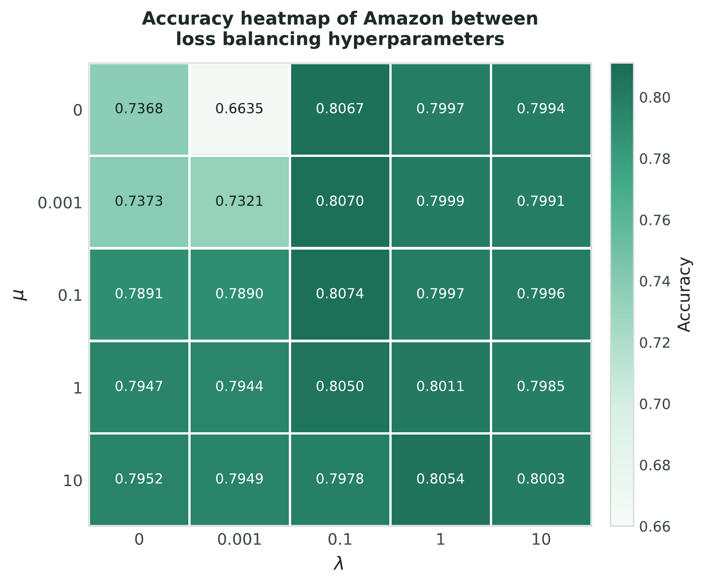
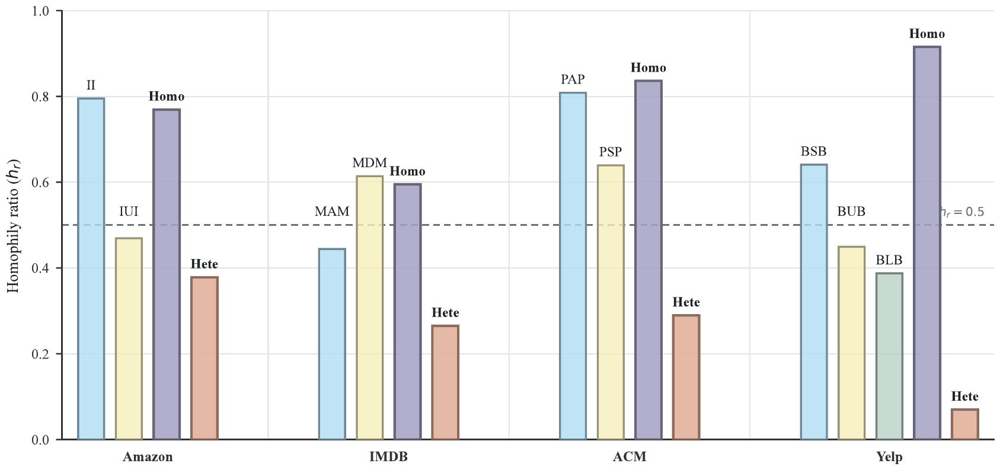
整体证据支持同一结论：TopoCor 的收益不来自简单增加三角形，而来自可区分的交互阶次、有界滤波、成对锚点保护、跨模态来源约束，以及与频率角色一致的结构分解。
05 · CITATION
@unpublished{wang2027topocor,
title = {Topological Corroboration via Simplicial Closures for
Heterophilic Multimodal Graph Clustering},
author = {Wang, Yumeng and Peng, Qiyao and Zhang, Mingqiao and
Wang, Wenjun and Shao, Minglai},
note = {AAAI 2027 Conference Submission},
year = {2027}
}